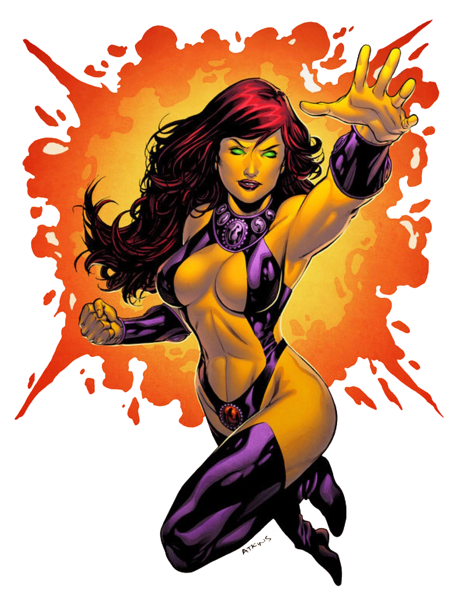

Criação da Estelar
Estelar, também conhecida como Princesa Koriand'r, é uma personagem dos quadrinhos da
DC Comics. Ela foi criada por Marv Wolfman e George Pérez, fazendo sua primeira
aparição em DC Comics Presents #26, lançado em 1980.
A Personagem Estelar
Estelar é uma alienígena do planeta Tamaran. Ela é uma princesa exuberante e energética,
conhecida por sua pele laranja, cabelos longos e capacidade de voar. Estelar possui habilidades
super-humanas, incluindo a capacidade de absorver energia e convertê-la em rajadas de energia estelar.
Estelar é uma personagem otimista e alegre, mas também tem uma história sombria. Ela foi
submetida a experimentos dolorosos em seu planeta natal e foi forçada a se casar contra
sua vontade. Após escapar de seu casamento arranjado, ela encontrou um novo lar na Terra
e se juntou aos Jovens Titãs, onde encontrou uma família e um propósito maior.
Quadrinhos Importantes da Estelar
A Estelar teve várias histórias importantes nos quadrinhos, explorando sua jornada como membro dos Jovens Titãs, seus relacionamentos com outros personagens e sua busca por aceitação e identidade. Aqui estão alguns dos quadrinhos mais relevantes da personagem:
"The New Teen Titans" (1980-1996):
Escrito por Marv Wolfman e ilustrado por George Pérez, esta série apresenta a formação dos Jovens Titãs e a história de Estelar como parte da equipe.
"Red Hood and the Outlaws" (2011-2015):
Escrito por Scott Lobdell e ilustrado por Kenneth Rocafort, esta série segue Estelar e outros heróis em suas próprias aventuras, explorando sua personalidade e seu papel como uma força poderosa.
"Titans" (2016-presente):
Escrito por Dan Abnett e ilustrado por Brett Booth, esta série acompanha Estelar e outros membros dos Titãs enquanto enfrentam ameaças e lidam com suas próprias jornadas pessoais.
Adaptações em Outras Mídias
Estelar também apareceu em várias adaptações animadas e live-action, trazendo sua energia e poderes estelares para as telas. Aqui estão algumas das mais notáveis:
Série animada "Teen Titans" (2003-2006):
Estelar é um dos membros principais dos Jovens Titãs nesta série animada, destacando suas habilidades únicas e sua personalidade cativante.
Série de TV "Titãs" (2018-presente):
A personagem Kory Anders/Estelar é retratada nesta série live-action, explorando sua história e seus poderes enquanto ela se une aos Titãs para proteger a cidade.
Habilidades da Estelar
Estelar possui uma série de habilidades super-humanas que a tornam uma poderosa guerreira. Aqui estão algumas de suas principais habilidades:
Voar:
Ela tem a capacidade de voar e se mover rapidamente através do ar.
Rajadas de Energia Estelar:
Estelar pode absorver e canalizar energia estelar, lançando rajadas de energia poderosas contra seus inimigos.
Superforça:
Ela possui uma força sobre-humana, permitindo que ela levante objetos pesados e enfrente adversários poderosos.
Regeneração:
Estelar tem a capacidade de se regenerar rapidamente de ferimentos, acelerando sua cura.
Conclusão
Estelar é uma personagem vibrante e poderosa do universo da DC Comics. Sua história como uma princesa alienígena com habilidades estelares a torna única e cativante. Ao longo dos anos, ela tem conquistado fãs com sua personalidade otimista, sua busca por identidade e sua força como membro dos Jovens Titãs. Com sua presença marcante nas páginas dos quadrinhos e em diversas adaptações, Estelar continua a inspirar e encantar pessoas de todas as idades.